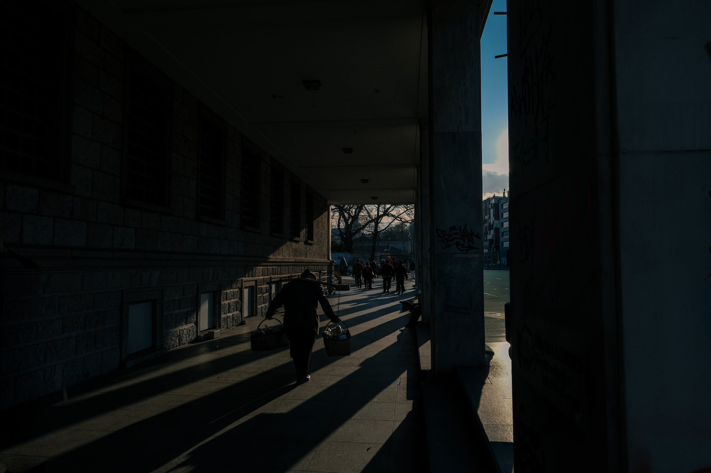

Gölgenin İçinden

Adam karanlığın içinden yürüyor. İki sepet taşıyor ellerinde. Yükünün ağırlığını sepetlerden çok, öne eğilmiş bedeninden, yere doğru uzayan gölgesinden anlıyoruz. Belki de hayat dediğimiz şey tam olarak budur: Kimsenin göremediği, ama her adımda biraz daha hissedilen bir ağırlık.
Kadrajın öteki ucunda ışık var. Gökyüzü maviliğe açılıyor, insanlar aydınlığa doğru dağılıyor. Aynı kaldırımda, aynı akşamın içinde, birbirinden habersiz iki ayrı hayat akıp gidiyor. Biri yükünü taşıyor, diğeri kendi yolunda ilerliyor. Oysa ikisi de aynı dünyanın, aynı anın içindeler.
Taş duvarlar, ağır sütunlar ve zamanın izlerini taşıyan yüzeyler bu dar geçidi çevreliyor. Güneşin uzattığı gölgeler kaldırıma düşüyor; yolun üzerine sessiz çizgiler çekiyor. Sanki her biri adamın önüne görünmez bir engel bırakıyor. Ama o durmuyor. Adımlarında telaş yok, tereddüt yok. Yalnızca yürümeye alışmış bir bedenin sessiz kararlılığı ve yılların biriktirdiği yorgunluk var.
Belki de hayat, aydınlıkla karanlığın, ağırlıkla hafifliğin aynı yerde buluşmasından ibaret. İnsan bazen ışığın hemen yanı başında, kendi gölgesinin içinde yürür. Kimi zaman taşıdığı yükü kimse bilmez; kimi zaman da nereye vardığını kendisi bile bilmeden yoluna devam eder.
Adam yürümeye devam ediyor. Karanlığın geride kalıp kalmayacağını bilmiyoruz. Belki ışığa ulaşacak, belki gölgesi onunla birlikte yürümeyi sürdürecek. Ama bildiğimiz bir şey var: Hayat, bütün ağırlığına rağmen, insandan bir adım daha atmasını istiyor.